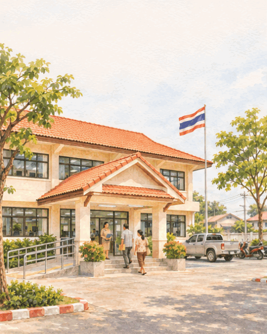
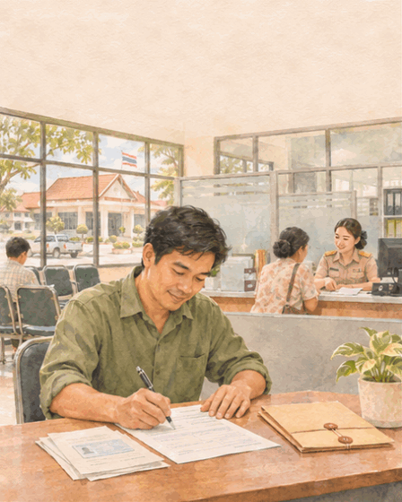

CIVIC MOTION / SELECTED A SERIES
GIF จากภาพที่เลือก · 1A / 2A / 3A
เฟรมสร้างด้วย ChatGPT · วนซ้ำรอบละ 3.6 วินาที




ภาพตัวอย่างเคลื่อนไหวสำหรับตรวจแบบ · ปุ่มหยุดภาพใช้ดูรายละเอียดแต่ละฉาก · Prompt · ผลตรวจไฟล์
เฟรมสร้างด้วย ChatGPT · วนซ้ำรอบละ 3.6 วินาที


ภาพตัวอย่างเคลื่อนไหวสำหรับตรวจแบบ · ปุ่มหยุดภาพใช้ดูรายละเอียดแต่ละฉาก · Prompt · ผลตรวจไฟล์